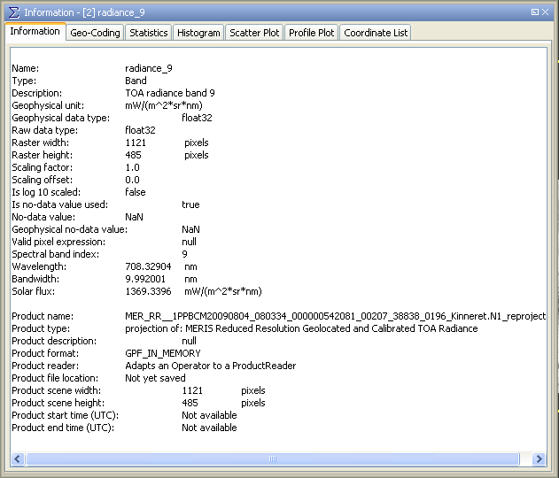

| Product/Band Information | |
This dialog, opened via  , shows general properties of a loaded product,
band or tie-point grid and their parent product.
, shows general properties of a loaded product,
band or tie-point grid and their parent product.
Note: A mouse right-click within the properties data area brings up a context menu with the item Copy data to clipboard. This will copy the diagram data as tabulated text to the system clipboard. The copied text can then be pasted directly into a spreadsheet application (e.g. Microsoft® Excel).
